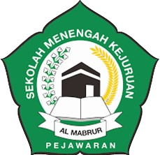
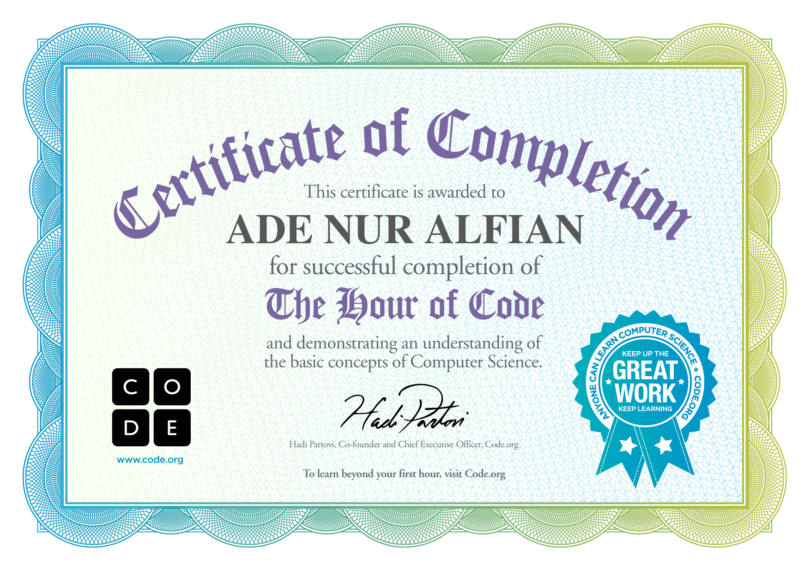

Created by:
ADE NUR ALFIAN
YAYASAN PERSAUDARAAN HAJI AL MABRUR
SMK ALMABRUR PEJAWARAN

Puji syukur ke hadirat Allah SWT yang telah memberikan rahmat dan karunianya sehingga makalah ini dapat tersusun. Makalah ini di susun guna memenuhi salah satu tugas mata pelajaran informatika. Semoga makalah ini dapat memberikan pemahaman dasar mengenai komputer serta menambah wawasan pembaca. Dalam penyusunan makalah ini, kami menyadari bahwa masih terdapat banyak kekurangan baik dari segi isi maupun penyajianya. Oleh karena itu kritik dan saran dari pembaca akan sangat berarti untuk perbaikan kedepanya. Demikian kata pengantar ini kami sampaikan semoga makalah ini dapat memberikan manfaat bagi kita semua.
September 2025
penyusun
Komputer dan sistemnya sudah mengalami banyak sekali perkembangan yang cepat. Demi memberi kemudahan kepada user untuk mengakses berbagai banyak macam data, yang mempunyai tingkat kesulitan yang bertahap sekaligus kerumitannya. Komputer merupakan alat modern yang tidak bisa dilepaskan dari kehidupan sehari-hari. Mulai dari mengerjakan pekerjaan kantor,multimedia, bahkan hiburan. Dewasa ini perkembangan komputer semakin berkembang dan masih akan terus berkembang tanpa batas. Kita sebagai manusia mau tidak mau harus mengikuti perkembangan kemajuan teknologi khususnya bidang komputerisasi agar kita tidak termakan oleh alat yang kita buat sendiri. Atas dasar itu kami mencoba membahasnya dalam bentuk makalah dengan harapan dapat berguna bagi orang lain khususnya bagi kami.
Banyak sekali pembahasan tentang komputer, tapi kami coba menulis makalah dengan judul Dasar-Dasar Komputer yang di jelaskan secara umum atau garis besarnya saja, jika kami membahas secara keseluruhan itu membutuhkan waktu yang tidak sedikit dan referensi yang banyak.
a. Pengertian Komputer Menurut Para Ahli.
b. Sejarah Perkembangan Generasi Komputer dari Awal Sampai Sekarang.
c. Komponen – Komponen komputer dan Fungsi – Fungsinya masing – masing.
Adapun tujuan dari makalah ini adalah untuk mengetahui dasar – dasar komputer agar seluruh program, peralatan atau peripheral lainnya dapat di manfaatkan oleh setiap orang yang ada pada pengembangan peralatan dapat dilakukan dengan mudah dan menghemat biaya. Setiap pembelian komponen seperti printer, maka tidak perlu membeli printer sejumlah yang ada tetapi cukup satu buah karena printer itu dapat digunakan secara bersama – sama. Komputer juga memudahkan pemakai dalam merawat harddisk lainnya. Misalnya untuk memberikan perlindungan terhadap serangan virus maka pemakai cukup memusatkan perhatian pada harddisk yang ada pada komputer
Menurut Kamus Besar Bahasa Indonesia (KBBI), komputer adalah alat elektronik otomatis yang dapat menghitung atau mengolah data secara cermat menurut yang diinstruksikan, dan memberikan hasil pengolahan, serta dapat menjalankan sistem multimedia (film, musik,televisi, faksimile, dan sebagainya), biasanya terdiri atas unit pemasukan, unit pengeluaran, unit penyimpanan, serta unit pengontrolan.
American Standart Institute
Oxford English Dictionary (OED2)
Menurut Oxford English Dictionary (OED2), komputer adalah suatu perangkat yang digunakan untuk menghitung atau mengendalikan operasi-operasi yang dinyatakan dalam bentuk numerik atau logika.
Dinus
Menurut Dinus, Komputer adalah serangkaian ataupun sekelompok mesin elektronik yang terdiri dari ribuan bahkan jutaan komponen yang dapat saling bekerja sama, serta membentuk sebuah sistem kerja yang rapi dan teliti. Sistem ini kemudian dapat digunakan untuk melaksanakan serangkaian pekerjaan secara otomatis, berdasar urutan instruksi ataupun program yang diberikan kepadanya.
Robert H. Blissmer
Menurut Robert H. Blissmer, komputer adalah perangkat elektronik yang mempunyai kemampuan untuk melaksanakan tugas atau menyelesaikan keperluan penggunaya, meliputi melakukan input data, memproses dan menyimpan data, hingga menghasilkan output dalam bentuk informasi.
Donald H. Sanders
Menurut Donal H. Sanderes, komputer merupakan sistem elektronik yang dapat memanipulasi data dengan sangat cepat dan tepat, sengaja dirancang dan diorganisasikan berjalan secara otomatis dalam menerima dan menyimpan data input, yang kemudia memprosesnya, serta menghasilkan output di bawah pengawasan dari berbagai langkah perintah program (dalam hal ini adalah sistem operasi) yang tersimpan pada memori penyimpanan komputer.
Larry Long dan Nancy Long
Menurut Larry Long dan Nancy Long, komputer mempunyai arti sebuah perangkat alat hitung elektronik yang memiliki kemampuan dalam menginterpresentasikan dan mengerjakan berbagai perintah program seperti input, output, perhitungan, dan operasi-operasi logika lainnya.
Hamacher et al
Menurut V.C. Hamacher et al, komputer adalah sebuah mesin penghitung elektronik yang dapat melakukan perhitungan dengan cepat dan bisa menerima informasi input dalam bentuk digital, kemudian memprosesnya berdasarkan program yang tersimpan pada menghasilkan output dalam bentuk informasi.
Elias M. Awad
Menurut Elias M. Awad, komputer adalah sebuah alat hitung yang memproses data dan kemudian menyajikannya dalam bentuk data analog dan digital.
William M. Fouri
Menurut William M. Fouri, komputer adalah suatu pemroses data (data processor) yang dapat melakukan perhitungan dalam ruang lingkup besar dan cepat, termasuk perhitungan aritmatika dan operasi logika, tanpa campur tangan manusia yang mengoperasikan selama proses perhitungan berlangsung.
Jhon J. Longkutoy
Menurut Jhon J. Longkutoy, komputer adalah suatu alat atau mesin pemecah persoalan, dan atau sebuah mesin dan alat pengolah data yang dapat menghasilkan suatu informasi yang diperlukan bagi penggunanya.
C. Hamacher, Z. G. Vranesic, dan Z. G. Zaky
Menurut C. Hamacher, Z. G. Vranesic, dan Z. G. Zaky, komputer adalah sebuah mesin penghitung elektronik yang dapat menerima informasi input digital, memprosesnya sesuai dengan program yang tersimpan pada memori, dan kemudian menghasilkan output dalam bentuk informasi.
Wiiliam Sawyer
Menurut William Sawyer, komputer adalah sebuah mesin multiguna yang dapat dilakukan untuk pemrograman dan diprogram, di mana mesin-mesin tersebut dapat menerima data berupa fakta dan gambar kasar, lalu kemudian memproses dan memanipulasinya menjadi sebuah informasi yang bisa digunakan oleh penggunanya.
Wimatra dkk (2008)
Menurut Wimatra dkk, komputer adalah suatu sistem perangkat elektronik yang memiliki tujuan untuk melakukan proses pengolahan data, yang kemudian dapat menghasilkan suatu informasi yang berguna.
Arif Susanto (2009)
Menurut Arif Susanto, komputer adalah sekelompok alat elektronik yang terdiri atas alat input, alat yang mengolah input (proccess), dan alat output yang memberikan informasi serta bekerja secara otomatis.
Sejarah Komputer Generasi Pertama Menggunakan Tabung Vakum (1946– 1959)
Tahun 1946 merupakan tahun diciptakan komputer generasi pertama dengan menggunakan tabung vakum sebagai komponen dasar pembuatan. Tabung yang digunakan sebagai komponen dasar ini memang dikenal tidak efisien di beberapa aspek karena cepat sekali panas ketika dipakai.Selain itu, komponen ini membutuhkan daya listrik sangat besar dalam pengoperasiannya. Electronic Numerical Integrator and Computer (ENIAC) merupakan salah satu contoh komputer generasi yang pertama. Komputer generasi pertama diciptakan oleh J.Presper Eckert dan John Mauchly di University of Pennsylvania. Mereka berdua membangun ENIAC dengan menggunakan 18.000 tabung vakum dengan ukuran 1800 kaki dan mempunyai berat yang mencapai sekitar 30 ton.
Sejarah Komputer Generasi Kedua Menggunakan Transistor (1959 – 1965)
Tahun 1959, komponen dasar untuk merancang komputer adalah teknologi transistor. Komponen ini dinilai jauh lebih efisien jika dibandingkan tabung vakum. Transistor mempunyai ukuran lebih kecil dibandingkan tabung 6 vakum serta daya listrik yang diperlukan juga lebih kecil untuk pengoperasiannya. Biaya pembuatan juga jauh lebih terjangkau. Bahasa pemrogaman telah diganti menggunakan bahasa Assembly dan bahasa simbolik. Dengan menggunakan bahasa pemrogaman tersebut, programmer dapat memberikan instruksi dengan kata-kata. Mesin yang pertama kali menggunakan teknologi ini ialah super komputer. IBM juga telah membuat super komputer dengan nama Sprery-rand dan Stretch serta menjadikan komputer dengan nama LARC. Komputer ini dikembangkan di laboratorium menggunakan energi atom. Pada tahun 1965, hampir berbagai bisnis besar menggunakan komputer generasi kedua untuk memproses informasi dengan keuangan bisnis.
Sejarah Komputer Generasi Ketiga Integrated Circuit (1965 – 1971)
Generasi Komputer ketiga dimulai pada tahun 1965 yang mana komputer dibuat menggunakan Integrated Circuit (ICs). Teknologi ini menggeser fungsi transistor sebagai komponen dasar komputer. Transistor masih tetap digunakan tapi ukurannya diperkecil. Beberapa transistor yang berukuran kecil tersebut dimasukkan di IC, bersamaan dengan resistor dan kapasitor. Komputer generasi ketiga menjadi komputer pertama yang membuat operator dapat berinteraksi menggunakan keyboard dan monitor dengan tampilan sistem operasi. Selain itu, komputer ini membutuhkan biaya lebih murah sehingga dapat dijangkau masyarakat umum.
Komputer Generasi Keempat Microprosesor (1971 – Sekarang)
Komputer yang kita pakai sekarang merupakan komputer generasi keempat, yang mana dibuat dengan menggunakan komponen dasar bernama Microprosesor. Chip microprosesor memiliki ribuan transistor dan beberapa macam elemen sirkuit yang mana saling terhubung menjadi satu.
Intel menjadi sebuah perusahaan yang paling berpengaruh terhadap perkembangan chip microprosesor karena mereka berhasil menciptakan intel 4004 yang merupakan cikal bakal perkembangan komputer. Perusahaan dari Intel berhasil menggantikan perangkat komputer yang memiliki ukuran yang besar menjadi sangat kecil sehingga menjadikannya lebih efisien.
Banyak sekali kemajuan pesat yang terjadi pada generasi ini, seperti diciptakannya mouse, GUI (Graphical User Interface) hingga komputer jinjing yang disebut dengan laptop. Bahkan prosesor atau CPU pun mengalami perkembangan dari waktu ke waktu hingga sekarang.
Komputer Generasi Kelima Artificial Intelligence (Sekarang – Masa Depan)
Generasi kelima ini sebenarnya masih tahap pembangunan, yang mana generasi ini akan mempunyai teknologi yang dibuat berdasarkan kecerdasan buatan (artificial intelligence).
Dalam sejarah perkembangan komputer, pengembangan komputer generasi kelima ini bertujuan agar dapat menghasilkan perangkat komputer yang dapat merespon, menggunakan bahasa yang digunakan manusia, diharapkan dapat mempelajari lingkungan di sekitarnya, serta dapat menyesuaikan dirinya sendiri.
Input Device (Unit Masukan)
Keyboard
Keyboard merupakan papan ketik komputer yang terdiri dari tombol tombol seperti huruf alphabet, angka dan beberapa perintah lain khusus untuk komputer. Melalui keyboard inilah perintah yang diberikan oleh user dimasukkan ke dalam komputer. Kombinasi tombol keyboard juga bisa menghasilkan perintah tertentu. Biasanya terdiri atas rangkaian huruf, angka, dan tombol fungsi lainya.
Mouse
Mouse adalah perangkat penunjuk yang berfungsi memasukkan data dan perintah ke dalam komputer selain menggunakan keyboard. Nama mouse diberikan karena kabel yang menjulur berbentuk seperti ekor tikus. Meskipun mouse masuk kedalam perangkat peripheral yang berada diluat perangkat utama komputer, namun mouse juga menjadi bagian penting perangkat keras komputer pada sebagian besar sistem.
Microphone dan Headphone
Microphone dan headphone berfungsi untuk merekam dan memasukkan suara agar dapat tersimpan di memori komputer. Selain itu, perangkat ini juga termasuk dalam perangkat output komputer dimana kita dapat mendengarkan suara. Nantinya suara yang dihasilkan akan tersimpan dalam memori komputer.
Touchpad
Touchpad ini mempunyai fungsi yang sama dengan mouse. Biasanya touchpad digunakan pada laptop dan notebook. Penggunaan touchpad sangatlah mudah, yakni hanya dengan jari tangan untuk memindahkan kursor/ pointer. Selain touchpad ada juga model lain yang masih sejenis yakni pointing stick dan trackball.
Joy Stick
Joy stick merupakan perangkat keras komputer yang berbentuk menyerupai tuas dan dapat bergerak ke semua arah. Joy stick ini berfungsi untuk mengirim signal arah sebesar 2 atau 3 dimensi ke komputer. Pada umumnya joy stick digunakan sebagai pelengkap untuk memainkan game atau video yang dilengkapi dengan lebih dari satu tombol.
Light Pen
Light pen merupakan pointer elektronik yang biasa digunakan untuk memodifikasi/ mendesain gambar dengan monitor secara langsung. Cara kerja alat ini adalah dengan berfungsi mengirim sensor cahaya ke komputer kemudian direkam dan ditampilkan di layar yang telah disediakan.
Output Device (Unit Keluaran)
Monitor
Monitor Yakni perangkat yang digunakan untuk mengetahui aktifitas yang dilakukan dalam komputer serta menampilkan informasi yang telah diolah. Monitor ini menjadi salah satu perangkat berfungsi yang paling penting dan harus ada, karena tanpa monitor komputer tak akan bisa melihat aktifitas apapun.
Printer
Printer adalah perangkat keras keluaran yang berfungsi untuk mengambil data elektronik yang tersimpan dalam komputer kemudian dibuatlah salinannya dalam bentuk nyata. Seperti saat kamu telah selesai membuat dokumen di komputer kemudian mencetak salinan dokumen tersebut dan dijadikan arsip. Pada umumnya printer dibedakan menjadi beberapa bagian yakni penggetil yang berfungsi sebagaai perangkat yang mengambil kertas dari baki, dan tinta/ toner sebagai pencetak pada kertas tersebut.
Speaker
Speaker adalah transduser yang berfungsi mengubag signal elektrik ke frekuensi audio dengan cara menggetarkan komponennya yang berbentuk membrane berfungsi menggetarkan udara sehinggga timbullah gelombang suara menuju kendang telinga dan dapat didengar.
Scanner
Scanner atau disebut juga alat pemindah yakni perangkat keras komputer yang berfungsi untuk memindai suatu bentuk seperti dokumen, foto, gelomgang, suhu dll, yang mana hasil pemindaian tersebut akan ditransformasikan kedalam komputer sebagai data digital.
Process Device (Unit Pemrosesan)
Power Supply
Power suplay adalah sebuat perangkat elektronika yang berfungsi sebagai sumber daya untuk perangkat lain khususnya listrik. Pada dasarnya power suplay bukanlah sebuah perangkat yang menghasilkan energy listrik saja melainkan juga beberapa daya yang menghasilkan energy mekanik dan energy lain.
RAM
Random Acces Memory/ RAM secara bahasa indonesia berarti memory akses acak. RAM adalah tempat penyimpanan pada komputer yang isinya dapat diakses sewaktu-waktu dan tidak memperdulikan letak data tersebut dalam memory.
CPU atau Processor
Central Prosessing Unit atau CPU dan Processor merupakan perangkat yang merujuk pada perangkat keras komputer untuk memahami dan melaksanakan perinyah dari perangkat lunak. Selain itu yang dimaksud dengan mikroprocessor adalah CPU yang diproduksi dalam sirkuit terpadu. CPU merupakan bagian utama dari komputer yang berfunhsi mengatur semua aktifitas yang terdapat pada komputer.
Motherboard
Papan induk atau yang lebih akrab disebut motherboard merupakan perangkat utama dalam komputer. Motherboard mempunyai peran sangat penting sebagai tempat berbagai perangkat keras komputer. Sehingga dengan motherboard ini semua perangkat dapat terhubung.Motherboard memilik fungsi utama sebagai pusat penghubung antar perangkat yang terpasang pada sebuah PC.
Storage Device (Unit Penyimpanan)
Harddisk
Komponen komputer yang satu ini mempunyai fungsi sebagai salah satu perangkat keras yang mampu menyimpan sebuah data sekunder. Salah satu unit penyimpanan yang cukup popular adalah Harddisk. Harddisk mempunyai kapasitas cukup besar yang berbeda tergantung pada kebutuhan penggunanya.
Periferal (Unit Tambahan)
Modem
Modem adalah satu perangkat yang mempunyai ukuran kecil dan berfungsi untuk menghubungkan komputer/ PC dengan jaringan internet. Selain itu modem juga mempunyai model juga dapat digunakan untuk menyimpan data dengan memasukkan microSD kedalamnya.
Flashdisk
Flashdisk atau USB drive adalah sebuah media penyimpanan dalam komputer yang sangat fleksibel dan bersifat non volatile. Dimana data tersebut tidak akan hilang meskipun terdapat aliran listrik didalamnya. selama datanya tidak dihapus, maka data tersebut akan tetap ada dalam kondisi apapun.
Komponen perangkat lunak (Software)
Software dapat diartikan sebagai beberapa program yang dibutuhkan oleh user untuk mendapatkan informasi atau aplikasi yang dibutuhkan.
Perangkat Lunak Sistem (Sistem Operasi Komputer)
Perangkat lunak sistem adalah perangkat lunak utama yang musti ada dalam sebuah komputer. Operating sistem ini merupakan penghubung yang berfungsi sebagai pengendali, penghubung antara perangkat keras dengan perangkat lunak lain, pengontrol dan bertanggung jawab sebagai manager aplikasi komputer.
Microsoft Office (Perangkat Lunak Perkantoran)
Microsoft office adalah salah satu perangkat lunak yang sengaja dibuat untuk kebutuhan perkantoran. Itu sebabnya dinamakan dengan Offive, sedangkan Microsoft adalah perusahaan vendor yang membuat aplikasi tersebut.
Microsoft Office mempunyai banyak software aplikasi perkantoran yang mempunyai beberapa fungsi spesifik seperti Microsoft Office Word sebagai perangkat lunak pengolah kata, Microsot Excel sebagai perangkat lunak pengolah angka dan perhitungan dan Microsoft Power Point digunakan untuk kebutuhan presentasi serta masih ada beberapa perangkat lainnya.
Web Browser ( Perangkat Lunak Browser Internet)
Software satu ini pasti sudah banyak orang yang mengenal dan bahkan orang yang belum pernah menggunakannya pasti sudah mengetahuinya bagaimana hakitat penggunaanya yang sebenarnya. Berfungsi sebagai perangkat lunak komputer yang berfungsi memperlancar aktifitas kita dalam dunia maya/ internet.
Perangkat Lunak Pengolah Gambar
Yang tak kalah penting dengan software lainnya adalah program aplikasi pengolah gambar. Fungsi perangkat lunak ini adalah sebagai perangkat lunak yang lebih spesisifik yakni untuk edit gambar dan picture. Berikut ini dalah beberapa program aplikasi pengolah gambar yang sudah cukup popular dan dapat kamu gunakan.
Paint
Software yang pertama untuk mengolah gambar adalah paint. Paint merupakan perangkat lunak komputer yang disediakan oleh sistem operasi windows sebagai pelengkay untuk mengedit image atau picture. Program ini sangat sederhana dan pemakaiannya juga simple sehingga terkesan jarang sekali orang yang menggunakannya.
Adobe Photoshop
Selanjutnya adalah Adobe Photoshop, yang mana software pengolah gambar/ foto professional yang banyak digunakan. Ini merupakan apilkasi yang banyak menelurkan perangkat lunak cukupp handal dan berkualitas. Dengan beragam fiturnya yang luar biasa, perangkat lunak ini mampu melakukan berbagai macam modivikasi dan efek-efek visual pada foto/ gambar. Namun kamu harus memperlajarinya terlebih dahulu ya.
Corel Draw
Perangkat lunak pengolah gambar yang satu ini juga mempunyai fitur dan fungsi cukup detail seperti phoroshope. Dengan menggunakan software ini kamu dapat membuat logo, edit gambar, dan menggambar dengan cara yang unik.Resikonya tentu saja kamu harus mempelajari lebih mendalam dulu sebelum menggunakannya.
3.1 Kesimpulan
Komputer pada dasarnya merupakan sebuah mesin elektronik yang dirancang memiliki fungsi utama untuk melakukan proses perhitungan.Komputer membutuhkan tiga elemen utama untuk dapat berkerja dengan baik dalam memproses, mengola, memanipulasi, hingga mengubah data menjadi sebuah informasi yang dibutuhkan oleh pengguna. Ketiga elemen utama tersebut adalah perangkat keras (hardware), perangkat lunak (software), dan pengguna (brainware).Komputer dapat memberikan sajian atau output berupa informasi baik dalam bentuk analog maupun digital.
3.2 Saran
Di harapkan setelah membaca makalah ini, pembaca akan mengetahui dan mempelajari komputer dan bagian – bagiannya akan mempermudah dalam pelaksanaannya mengakses komputer secara cepat dan tepat guna.
